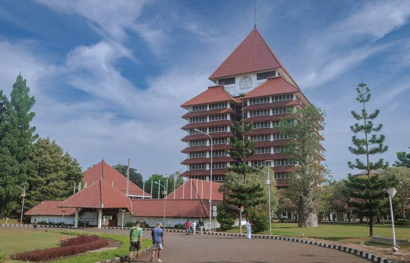
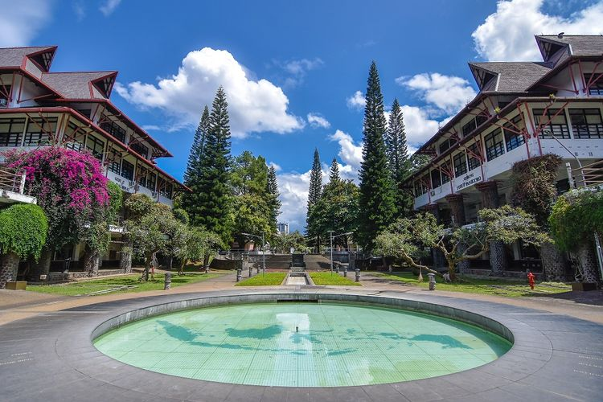
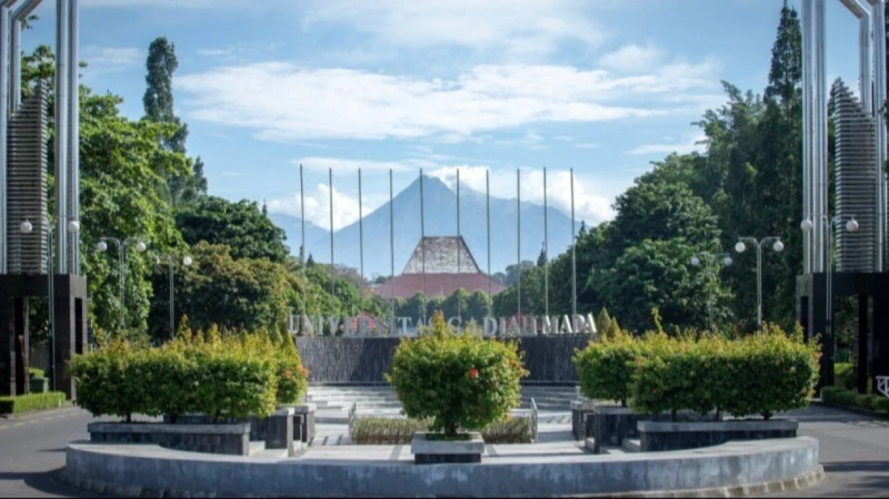

Berikut adalah beberapa foto dari kampus-kampus terbaik di Indonesia yang menampilkan fasilitas, arsitektur, dan suasana kampus yang mendukung proses belajar-mengajar yang berkualitas.
1. Universitas Indonesia
Universitas Indonesia (UI) - Kampus yang terletak di Depok ini dikenal dengan arsitektur modern dan suasana hijau yang mendukung kenyamanan mahasiswa dalam belajar dan berkreasi.
2. Institut Teknologi Bandung
Institut Teknologi Bandung (ITB) - Kampus yang terletak di Bandung ini terkenal dengan bangunan ikonik dan fasilitas teknologi canggih untuk mendukung pengembangan inovasi di bidang teknik dan sains.
3. Universitas Gadjah Mada
Universitas Gadjah Mada (UGM) - Kampus di Yogyakarta ini menawarkan suasana akademik yang kondusif, dengan lingkungan yang kaya akan sejarah dan budaya.